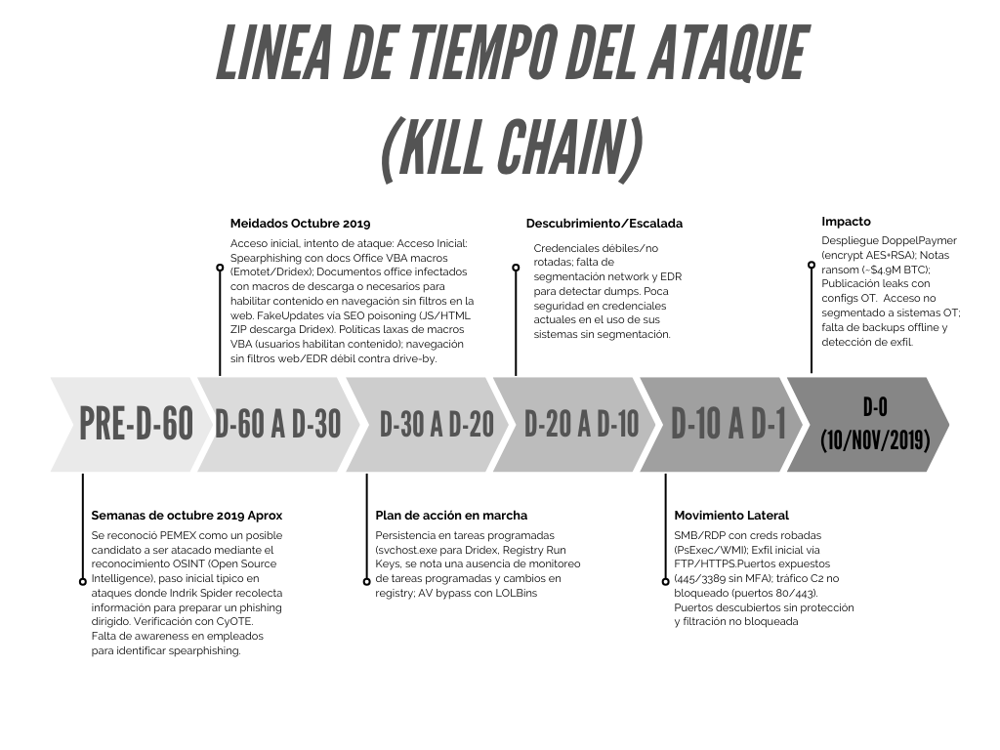

ACTIVIDAD 1
Análisis de ciberataque real y su impacto empresarial
AÑO
2019
PAÍS
México
ENTIDAD AFECTADA
PEMEX
Condiciones de ciberseguridad previas
PEMEX tenía madurez baja; sin EDR robusto, segmentación network débil (RDP/SMB expuestos), políticas laxas de macros VBA y falta de monitoreo de tráfico C2/observables. No hay evidencia de backups offline efectivos o respuesta IR madura pre-ataque.
Factores que facilitaron el ataque
- ⚠️ Error humano: Empleados habilitaron macros VBA en spearphishing y/o cayeron en FakeUpdates.
- 🛠️ Técnica: LOLBins no bloqueados, credenciales débiles en LSASS, AV bypass fácil.
- 🛡️ Política: Ausencia de MFA en RDP/SMB, sin refuerzo en macro disabling, OSINT expuesto para targeting preciso.

Visualización de la ventana de intrusión sigilosa (60 días).
Impacto del Incidente (D-0)
El 10 de noviembre de 2019, PEMEX sufrió un ataque de ransomware detectado tras la ejecución del malware. Los atacantes demandaron un rescate de 565 BTC (aprox. $4.9 millones USD en su momento). Aunque la empresa afirmó que la producción no se detuvo, el impacto operativo fue severo: empleados perdieron acceso a sistemas por días y datos críticos (incluyendo información OT) fueron publicados en sitios de filtraciones.
Vectores de Acceso Utilizados
Spearphishing
Entrega de malware como Emotet o Dridex mediante adjuntos maliciosos que requerían la ejecución de macros VBA.
FakeUpdates & SEO Poisoning
Uso de sitios falsos de "actualización de navegador" para engañar a los empleados y descargar Dridex tras búsquedas web.
Tabla técnica del ataque
| Elemento | Descripción |
|---|---|
| Tipo de Ataque | Ransomware, cifrado de equipos y exigencia de rescate en criptomonedas. |
| Actor o grupo atacante | Presuntos cibercriminales vinculados a grupos como DoppelPaymer. |
| Vector de Entrada | Probable acceso inicial vía phishing. |
| Vulnerabilidad Explotada | Sistemas sin parches y credenciales débiles. |
| Etapas de ataque (MITRE ATT&CK) |
|
| Sistemas comprometidos | Menos del 5% de los equipos corporativos (administrativos y logística). |
| Mecanismos de respuesta |
|
Evaluación del impacto
| Principio | Descripción del impacto | Evidencia del caso |
|---|---|---|
| Confidencialidad | Exfiltración de información interna previa o simultánea al cifrado (Doble extorsión). | Amenazas públicas y filtración de documentos en plataformas de los atacantes. |
| Integridad | Alteración no autorizada mediante cifrado malicioso, impidiendo el uso de archivos. | Sistemas administrativos y equipos corporativos cifrados sin acceso a datos. |
| Disponibilidad | Interrupción parcial de servicios administrativos por inoperatividad de equipos. | Afectación del 5% de equipos y suspensión de procesos de facturación y pagos. |
Cálculo del costo total del ciberataque (MXN)
| Tipo de costo | Descripción | Estimación USD | Estimación MXN (1USD=19.26) |
Argumentación | % Presupuesto Anual TI | Comparativa Sector |
|---|---|---|---|---|---|---|
| Pérdidas Operativas | Días de inactividad, cancelación de operaciones. | $12,000,000 | $231,120,000 | Parálisis en facturación y logística. | ~25% | 1/4 del presupuesto de ciberseguridad de una paraestatal grande. |
| Daños Reputacionales | Pérdida de clientes, caída en valor de acciones. | $5,000,000 | $96,300,000 | Filtración de datos en la Deep Web. | ~10% | Supera cualquier campaña nacional de confianza digital del año. |
| Costos Técnicos | Recuperación de sistemas y reemplazo de equipos. | $3,500,000 | $67,410,000 | Limpieza de 10,000 terminales y restauración. | ~7% | Equivale a renovar licencias críticas de toda la infraestructura. |
| Costos Legales | Multas, demandas o sanciones normativas. | $500,000 | $9,630,000 | Auditorías externas post-ataque. | ~1% | Impacto menor en presupuesto, pero alto en auditorías de la ASF. |
| Pago de Rescate | Monto solicitado por los atacantes. | $4,900,000 | $94,374,000 | Monto solicitado (565 BTC). | ~10% | Representaba el 10% del fondo de emergencia tecnológica. |
| Inversión en Seguridad | Inversión reactiva para fortalecer vulnerabilidades. | $15,000,000 | $288,900,000 | Actualización masiva y segmentación de redes. | ~31% | 1/3 del presupuesto anual redirigido a modernización forzada. |
| TOTAL ESTIMADO | $40,900,000 | $787,734,000 | Impacto económico total. | ~84% | Consumió casi la totalidad del presupuesto anual del sector. | |
Pago de la empresa por el rescate: No realizado según declaraciones oficiales.
El ataque de DoppelPaymer a Pemex no solo fue un desastre técnico, sino financiero. El impacto total estimado de $787.7 millones de pesos absorbió el equivalente al 84% del presupuesto anual de ciberseguridad del sector, demostrando que la recuperación es exponencialmente más cara que la protección proactiva.
Relación con Marcos Normativos y Brechas de Seguridad
El incidente en PEMEX revela una falta de alineación con estándares internacionales. La certificación en ISO/IEC 27001 requiere un análisis de brecha (Gap Analysis) y mejora continua, procesos que habrían expuesto las vulnerabilidades críticas antes de ser explotadas.
ISO/IEC 27001
Gestión de Seguridad- Control A.12.3 (Backups): PEMEX perdió el 5% de equipos administrativos sin posibilidad de recuperación. Un respaldo offline efectivo habría restaurado la operatividad sin afectar facturación.
- Control A.9.2 (Accesos): El ransomware se propagó mediante credenciales comprometidas. La falta de gestión de privilegios mínimos facilitó el movimiento lateral.
NIST CSF
DetecciónFunción Detectar (DE.CM-7): La falta de monitoreo de actividad anómala impidió identificar el cifrado de archivos en tiempo real, lo que habría detenido el ataque antes de impactar los procesos administrativos.
GDPR
PrivacidadArtículo 32: Exige medidas de resiliencia y cifrado. La exposición de archivos secuestrados aumentó el riesgo de espionaje industrial y la pérdida de confianza institucional.
Análisis de Brecha: PEMEX vs. Estándares
| Control / Norma | Deficiencia Identificada | Impacto en el Incidente |
|---|---|---|
| Análisis de Brecha (ISO 27001) | Inexistente o ineficaz. | Demuestra bajo compromiso institucional en prevención. |
| Gestión de Respaldo (A.12.3) | Sin copias de seguridad funcionales. | Parálisis en pagos y facturación por días. |
| Monitoreo Continuo (NIST) | Falta de detección de actividad C2/Cifrado. | 60 días de intrusión sigilosa sin ser detectada. |
| Resiliencia de Datos (GDPR) | Falta de pruebas de recuperación. | Filtración de datos OT en sitios de leaks. |
Reflexión Técnica y Prospectiva
El caso PEMEX no debe ser visto como un incidente aislado, sino como una lección sistémica sobre la fragilidad de las infraestructuras críticas en la era del ransomware. Desde una perspectiva técnica, el ataque subraya que la seguridad periférica ha muerto: no basta con tener un firewall si los protocolos internos como RDP y SMB permanecen expuestos y las macros de Office son tratadas como herramientas inofensivas.
En escenarios reales, observamos que la mayor vulnerabilidad no es el software desactualizado, sino la brecha de gobernanza. La ausencia de una estrategia de Zero Trust y de una cultura de higiene digital convirtió un error humano común (clic en un correo de phishing) en una crisis nacional. La ciberseguridad no es un gasto en software, es una inversión en resiliencia operativa.
Puntos Clave para el Futuro:
- Asimetría del ataque: Un atacante solo necesita una puerta; el defensor debe asegurar todas.
- Detección > Prevención: Asumir el compromiso (Assume Breach) para reducir los tiempos de detección de 60 días a minutos.
- Cultura Cyber: La tecnología falla si el usuario no es la primera línea de defensa.
"La pregunta no es si seremos atacados, sino qué tan rápido podremos recuperarnos cuando suceda."